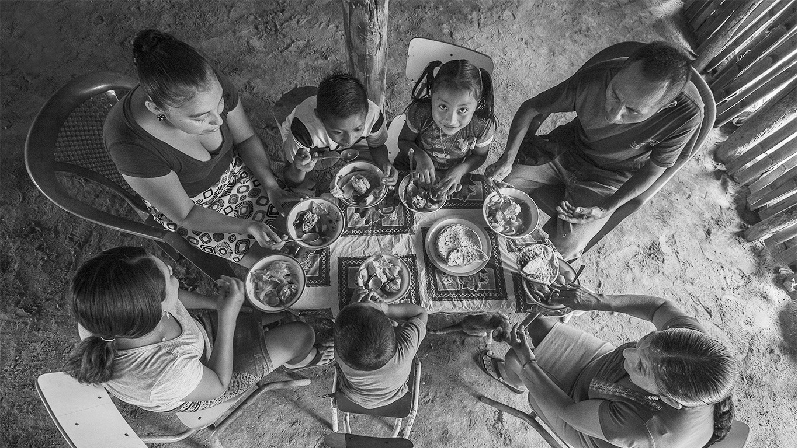
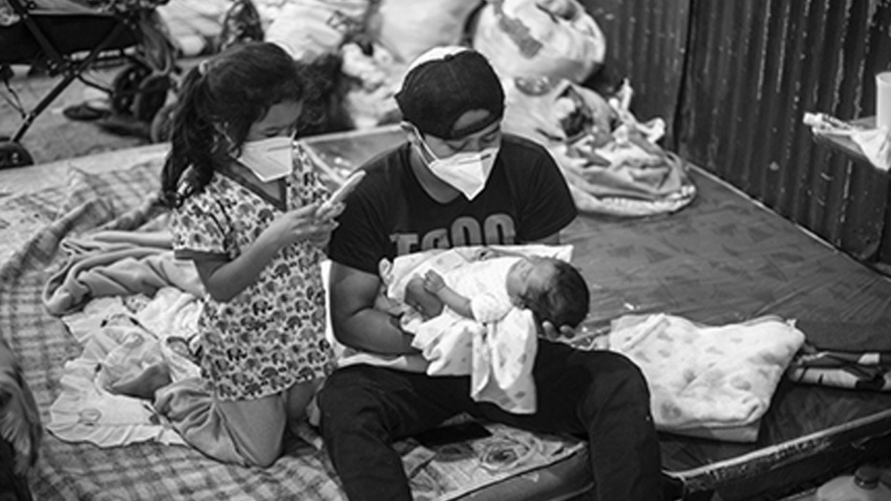
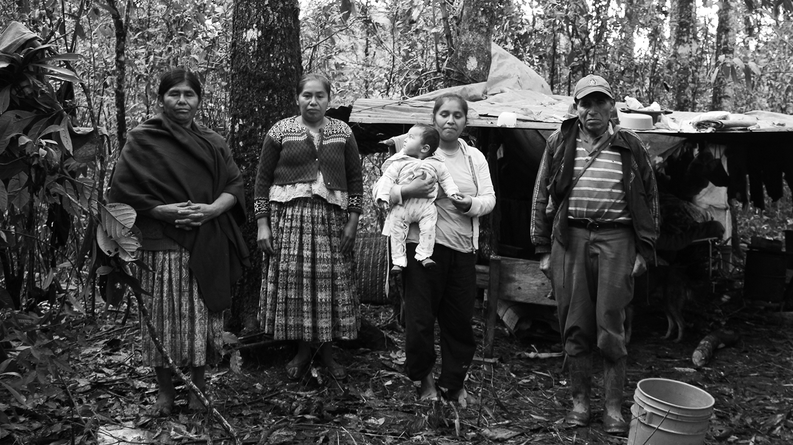
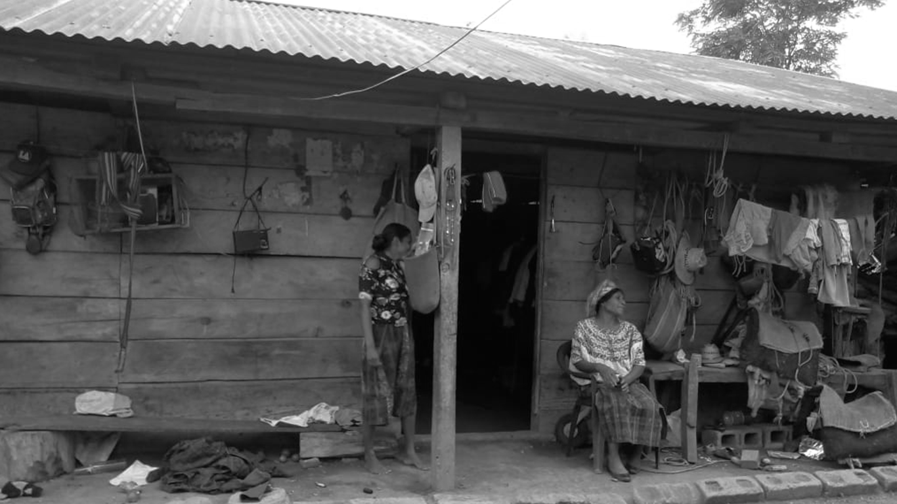

THE STUDY
Luckily, a recent survey conducted by the World Food Programme helps unearth this information.
Of the nearly 5000 participants of the survey, which asks questions ranging from relationships to those who emigrated, to plans of the survey participant of ever migrating, to food security and well-being, 1447 respondents reported that they received remittances from someone abroad. Of these, 709 respondents received remittances on a regular basis, and graciously consented to providing detailed information about their household’s use of this money. We can try to understand from their responses how remittances are generally used in the Northern Triangle.
Here, we represent each of these 709 households, each of these families in the Northern Triangle Region, as a circle. You can hover over each to learn about the amount their household receives in remittances on average per month, as well as their self-reported household income. Let’s try to discern some information from this survey.
A VIEW OF REMITTANCE-RECEIVING HOUSEHOLDS BY COUNTRY
Of the 709 respondents,
- 220 said they lived in Guatemala. They on average received 125.33 USD/mo in remittances.
- 151 said they lived in Honduras. They on averaged received 144.21 USD/mo.
- 338 responded saying they lived in El Salvador, receiving on average 135.71 USD/mo.
For comparison, for a family of four, the average monthly cost of living excluding rent is 2,097.67 USD in Guatemala, 1,884.52 USD in Honduras, and 2,029.16 USD in El Salvador. [3]
A VIEW OF REMITTANCE-RECEIVING HOUSEHOLDS IN RURAL vs. URBAN AREAS
Of the 709 respondents, 450 were from rural areas, and 259 from urban.
Rural-area participants received a similar amount in remittances per month on average, according to self-report, to urban-area participants, about 134.79 USD/mo compared to 133.44 USD/mo.
Now let’s view what each household reported they use remittance money towards. When asked about the expenses remittances cover, survey participants had the following options with which to respond, in decreasing order of response frequency:
- food,
- utilities,
- health,
- clothes and shoes,
- education,
- housing,
- savings,
- migration loan debt,
- agriculture,
- housing,
- other debts,
- business ventures,
- home purchase, and
- commitments made on behalf of migrants.
- other,
To answer the question of how remittances are most often used, let's visualize the number of survey respondents using remittance funds towards the most basic needs like food, utilities like light, water, and mobile communication, and health, and then look at needs just beyond those, like clothing and education. We noticed that less than 5 percent of respondents reported using remittance money towards each of the other eleven categories.

HOW MANY HOUSEHOLDS SPEND REMITTANCE MONEY ON...
FOOD
A majority of respondents, 574 out of 709
(80.96%), reported spending remittance money on food.
HOW MANY HOUSEHOLDS SPEND REMITTANCE MONEY ON...
UTILITIES
296 respondents
(41.75%) said some remittance money goes towards utility expenses.

HOW MANY HOUSEHOLDS SPEND REMITTANCE MONEY ON...
HEALTH
252 respondents
(35.54%) said some of the money goes towards health expenses.
HOW MANY HOUSEHOLDS SPEND REMITTANCE MONEY ON...
EDUCATION
In comparison, a mere 51
(7.19%) are able to report putting remittance money towards education expenses in the household.

HOW MANY HOUSEHOLDS SPEND REMITTANCE MONEY ON...
CLOTHING
Similarly, only 61 of the 709
(8.60%) participants report putting remittance money to clothing and shoes.

HOW MANY HOUSEHOLDS SPEND REMITTANCE MONEY ON...
Housing
Finally, only 35 of the 709
(4.94%) participants report spending remittance money towards housing.
HOW MANY HOUSEHOLDS SPEND REMITTANCE MONEY ON...
Other Expenses
Finally, only 43 of the 709 (6.06%) households report spending remittance money towards other expenses such as agricultural inputs, business ventures, savings, the Migrant's financial commitments', debts and other undefined expenses.